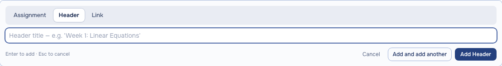
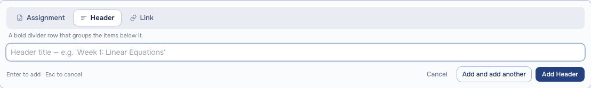
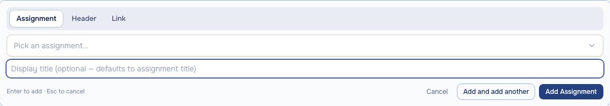
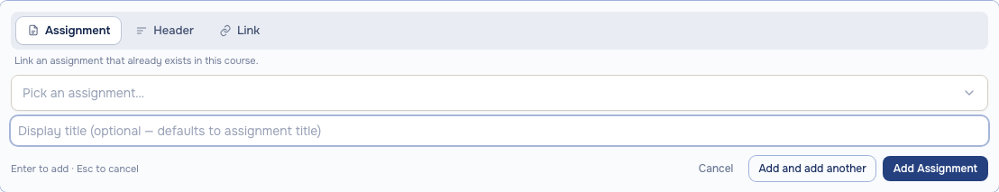
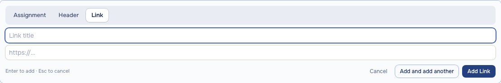
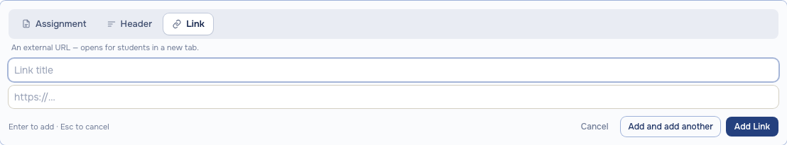
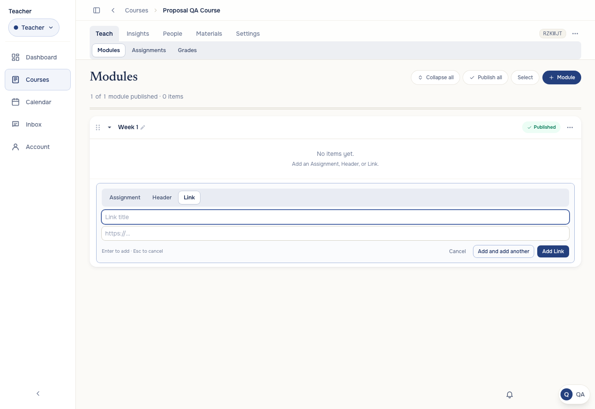
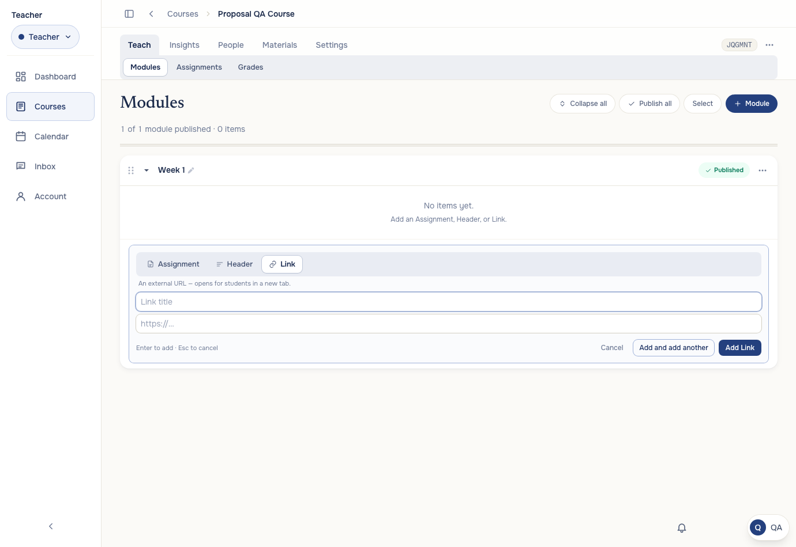

Three changes: type chips get icons (same line-icon language as module rows), a one-line hint explains the selected type, and input focus rings are softened from solid navy to a calm 60%-opacity accent.







